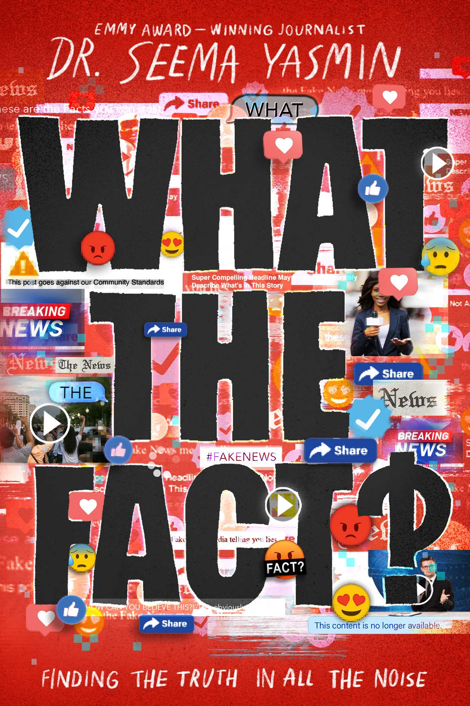
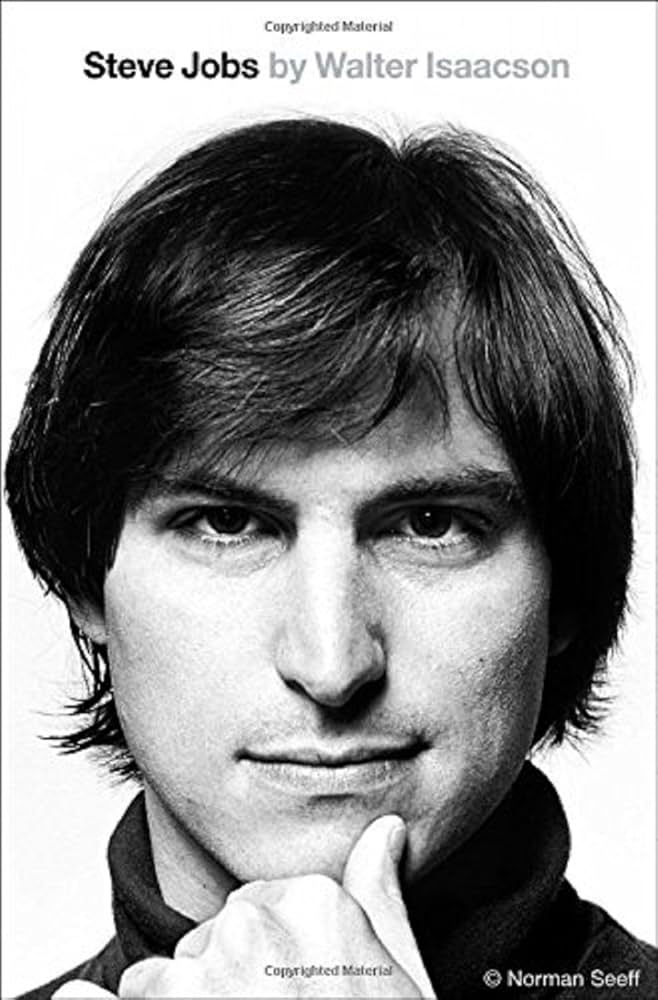
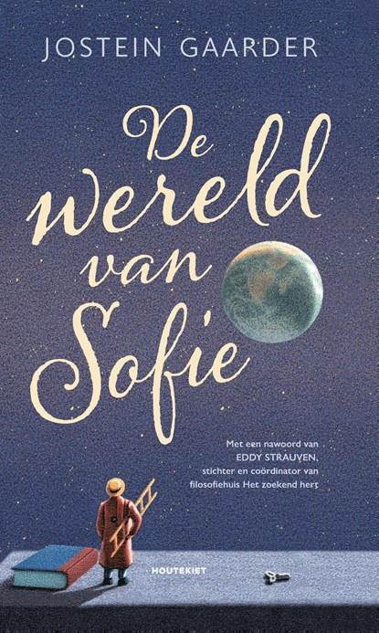

Onderzoekende Denker
Jouw talent ligt in analyseren, onderzoeken en complexe problemen oplossen
LEER
- Klik&Tik informatievaardigheden - Effectief online onderzoek doen
- Workshop ChatGPT voor onderzoek - AI-tools voor informatie verzamelen
- Digisterker cursus - Digitale vaardigheden voor onderzoek
VRAAG
- "Waar vind ik betrouwbare bronnen en databases voor mijn profielwerkstuk?"
ONTMOET
- Studiegroepen in stilteruimtes - Samen studeren en kennis delen Stilteruimtes
- Kennisplein informatiedesk Bibliotheek
LEES



DOE
- LEGO SPIKE Prime - Life Hacks/Uitvindersteam modules programmeren BiblioLab
- Kennisplein databases - Toegang tot wetenschappelijke bronnen Kennisplein
- Toekomstzone - Rustige studieplekken met technologie Lelystad